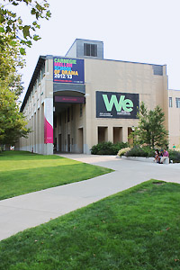
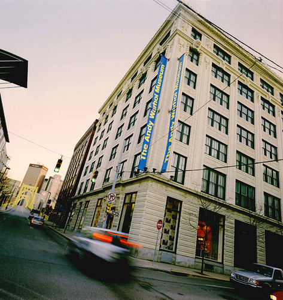

Where is the Exhibition?
The Miller Gallery is located on Carnegie Mellon University's campus, right between Purnell Center for the Arts and Warner Hall.
View Larger Map |
 Click to visit Miller Gallery's website. |
Interested in visiting the Andy Warhol Museum?
The Andy Warhol Museum is located at 117 Sandusky Street in Pittsburgh, Pennsylvania.
View Larger Map |
 Click to visit the Andy Warhol Museum's website. |